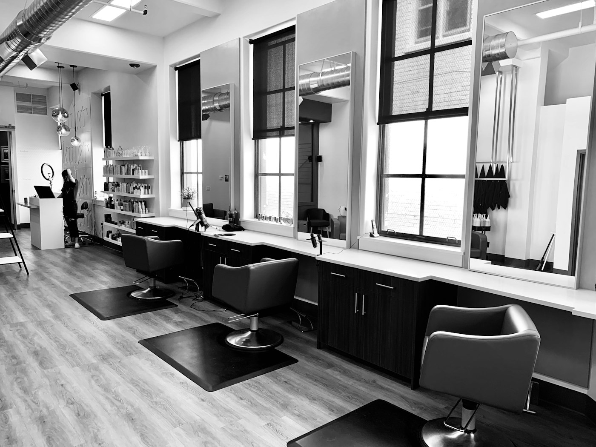
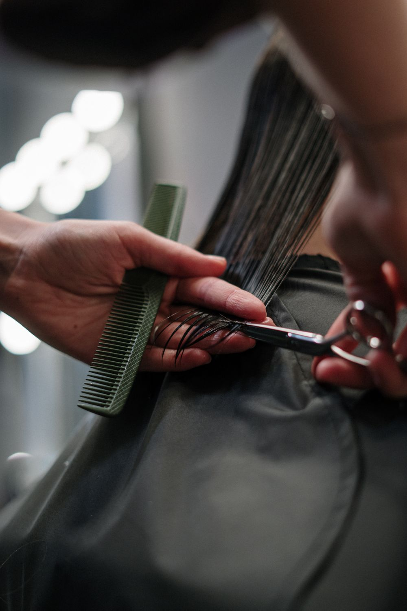

El cliente escribe por WhatsApp: el mensaje llega a la bandeja del panel.
Sistema de gestión
La agenda del día, clara y en un solo lugar.
Para salones, veterinarias, consultorios o talleres: cargan el turno, el profesional y el estado. El cliente pide por WhatsApp; ustedes confirman en el panel.
- CRUD alta, edición y baja
- WhatsApp pedidos a confirmar
- Equipo varios profesionales

AgendaPágina de ejemplo · panel incluido
Uso
Cómo funciona en el día a día
Para salones, veterinarias, consultorios o talleres: cargan el turno, el profesional y el estado. El cliente pide por WhatsApp; ustedes confirman en el panel.
Usted elige fecha, profesional y servicio, o rechaza el pedido.
El turno queda cargado: pendiente, en curso o atendido. También puede editar o borrar.
Cómo llega un pedido de WhatsApp al panel
El cliente escribe al WhatsApp del local, como siempre. Ese mensaje no queda solo en el celular: llega a su sistema y aparece en una bandeja del panel. Usted elige fecha, profesional y servicio, confirma o rechaza, y el turno queda en la agenda.
La bandeja es de muestra: puede probar confirmar y rechazar sin conexión real a WhatsApp.
Se conecta el número Business de su negocio a su panel (API de WhatsApp + servidor).
Los pedidos no se pierden en el chat: los ve, los agenda y responde con orden.
Referencia visual
Ambiente del ejemplo
Fotos de referencia del rubro. En un trabajo a medida se usan las suyas.



Panel
Qué ve quien administra
Alta, edición y baja de turnos, clientes y servicios.
Bandeja de pedidos: confirmar o rechazar y pasar a la agenda.
Pendiente, en curso, atendido, cancelado.
A medida
¿Le sirve este sistema a su local?
Se adapta a su rubro. No es un software de suscripción: se cotiza y se entrega para usted.
Consultar